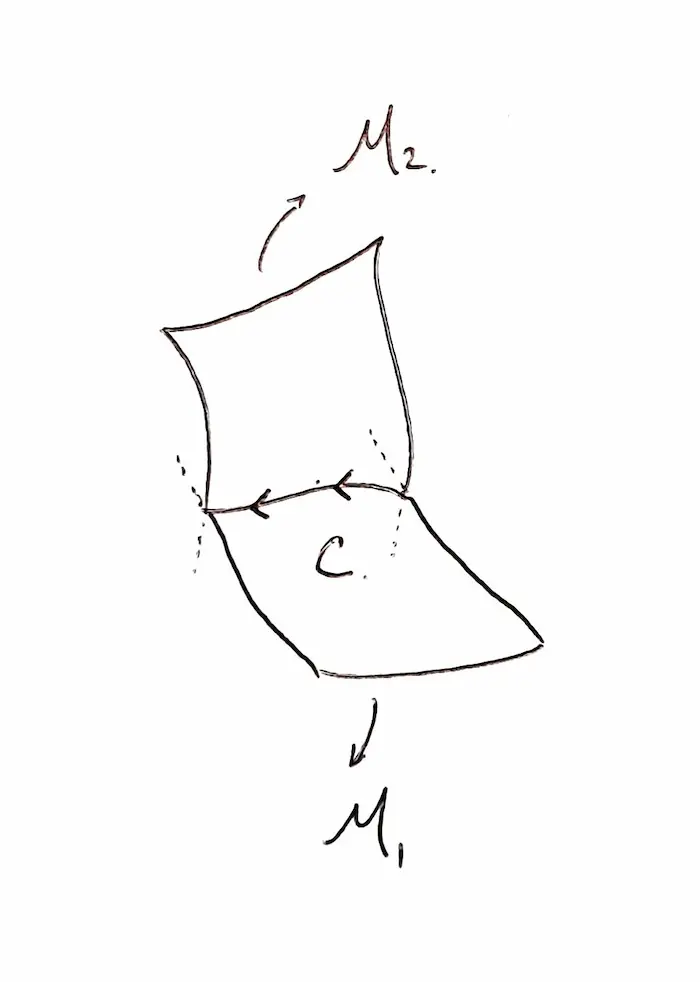
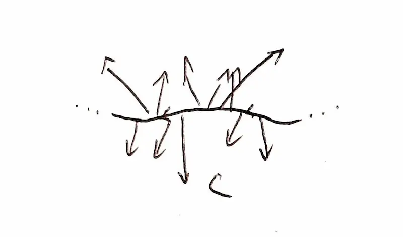
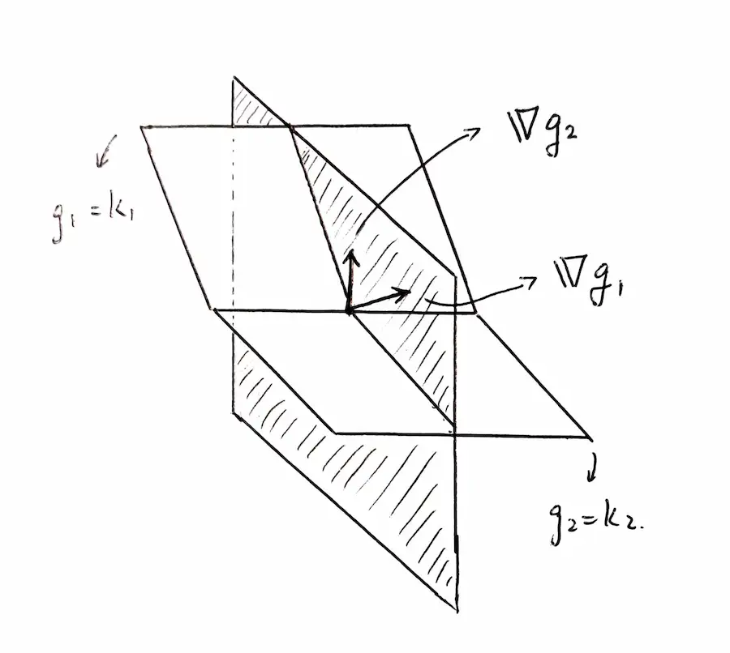

如何理解拉格朗日乘子
Last updated on February 2, 2023
Contents
前言
一開始是高二看到這個東西，但怎麼看都看不懂，只知道它是用在有限制條件下求極值的工具。
所以就變成時不時去看一下，一直到現在學了向量微積分後才懂這個名字看起來酷酷的東西是在做甚麼 owo。
正文
二維情形
據筆者所知，拉格朗日乘子大多都是拿來解在邊界上的極值問題。而在 $xy$ 平面上區域的邊界 ($\partial\Omega$) 即是一條曲線。
所以解一個二元函數在 $xy$ 平面上區域的極值通常都是用 偏微都為0 解區域內極值，搭配上 拉格朗日乘子 解邊界上的極值。
不過先拉回來正題：拉格朗日乘子在二維，單限制條件下的聯立方程式可以被表達為
$$ \begin{cases} \nabla f = \lambda \nabla g\\ g=0 \end{cases} $$
以下是理解這個奇怪東西的過程：
現在有一個要求極值的二元函數 $f(x,y)$ 在 $\mathbb{R}^3$ 中，可以把它想像成要爬的山。
而現在有另一個限制條件 $g(x, y) = 0$，也就是一條曲線，可以把它想像成爬山的路徑。
現在想像你在沿著這條路徑爬這座山。平常爬山時如果位在於非極值高度的時候會明顯感覺到自己在下降或是上升。
但是如果爬到一個區域極值高點時，會明顯感覺到自己上升的幅度在減小，最後變成 $0$，再變成下降的幅度越來越多。
下降到最低點時的情況剛好相反。
但我們要如何用數學來描述剛好在最高點 or 最低點的那個時刻？
在此，我們先引進先前的方程式[1]：
$$ df = \nabla f \cdot d\mathbf{r} $$
我們從這條恆等式已經知道：如果是在等位面上的曲線走（朝著 $d\mathbf{r}$ 的方向走），$df$，也就是爬升的高度，會是 $0$。
所以我們在最高點時不會感覺到上升或下降，就是因為我們的路徑剛好跟某條等位面上的曲線相切。
而如果相切，就代表我們這條路徑（$g(x,y)$）的梯度會剛好與這座山（$f(x,y)$）的梯度平行，這個現象可以被描述為：
$$ \nabla f = \lambda \nabla g $$
也就是一開始聯立方程式中的第一條。
如果弄不太懂，非常推薦可以去網路上查一堆視覺化的圖，對理解過程非常有幫助。
而那條聯立方程式，也可以被寫成
$$ \begin{cases} f_x = \lambda g_x\\ f_y = \lambda g_y\\ g=0 \end{cases} $$
三維情形
單限制函數
我們類比二維的情況，套用相同的概念：極值發生在 目標函數 與 限制函數 的梯度向量平行之時。
只是在三維時，我們已經沒辦法將諸如 $f = x^2-xy+z$ 這種要求極值的函數視覺化了，因為那會需要四維空間。但因為 $\nabla f$ 是一個三維向量場，所以我們仍然可以想像一下。
現在想像在 $\mathbb{R}^3$ 中有由限制函數 $g(x,y,z) = k$ 所描繪出來的一個（二維）曲面，取名為 $\mathcal{M}$。另外，空間中也充滿了 $f$ 的梯度向量場。
接下來，為了節省腦力，我們將 $\nabla f$ 要渲染出的範圍用 $\mathcal{M}$ 限制住。也就是只渲染以 $\mathcal{M}$ 上點為起點的 $\nabla f$。等價於想像以下這個 $S$。
$$ \forall p \in \mathcal{M},\ S = \left\{\nabla f (p) \right\} $$
這時候，$\mathcal{M}$ 上的 $\nabla f$ 向量可能會在某一點跟 $\mathcal{M}$ 垂直，而那就是極值發生之時。
兩限制函數
現在假設我們有兩個限制函數：
$$ g_1(x,y,z) = k_1 \\ g_2(x,y,z) = k_2 $$
同樣地，我們將 $g_1$ 所描繪出的曲面取名為 $\mathcal{M}_1$；$g_2$ 的取名為 $\mathcal{M}_2$。
類比上面所想像的情況，因為兩曲面在空間中相交的結果是一條曲線（如下圖），所以這次我們要以它為主角，把 $\nabla f$ 渲染在這條曲線上就好。


因為不敢直接拿原文書中圖片的所以就自己畫了 owo
極值發生之處即是當某一點的 $\nabla f$ 會與曲線垂直之時。但要如何用數學描述這個情況？
如果要描述 $\nabla f$ 在某點會與曲線垂直，那我們就要先描述出與曲線在那一點垂直的面。要描述這個面，我們可以用 $\nabla g_1$ 與 $\nabla g_2$ 在那點的兩個向量作為基底，並用它們做線性展開，成為我們要描述的面。

而 $\nabla f$ 只要與曲線垂直，就會落在這個面上。這個現象用數學描述為：
$$ \nabla f = \lambda \nabla g_1 + \mu \nabla g_2 $$
也就是 $\nabla f$ 可以被描述為兩個向量的線性組合。
將這個式子與限制條件聯立起來，就成為了拉格朗日乘子在 $\mathbb{R}^3$ 中且有兩限制函數的聯立方程了。
因為美觀，把 $k_1$ 與 $k_2$ 移到左邊，成為 $g_1’$ 與 $g_2’$。
$$ \begin{cases} \nabla f = \lambda \nabla g_1' + \mu \nabla g_2'\\ g_1' = 0\\ g_2' = 0 \end{cases} $$
後記
雖然本文中只有提到 三維，兩限制條件 以下的情況，但拉格朗日乘子卻是在任意維度任意數量的限制條件下都可以用。
筆者自己也暫時沒辦法理解更高維度的情況。肯定是要等學了一些高等微積分或是更深入的東西之後，才會理解這個酷酷東西到底在做甚麼 OwO。
先醬。